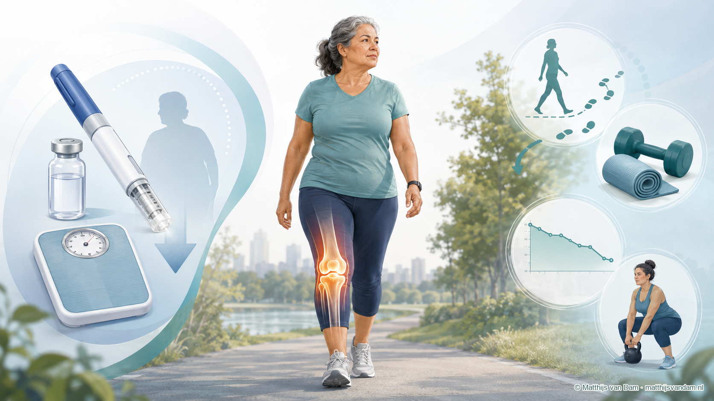

Nieuws · Artrose en leefstijl
8 vragen over obesitasmedicijnen bij reuma en artrose
ReumaNederland publiceerde onlangs een artikel met acht veelgestelde vragen over obesitasmedicijnen bij reuma en artrose.[1] Voor dit artikel heb ik als orthopedisch chirurg en onderzoeker inhoudelijk meegedacht en meegelezen.
Obesitasmedicijnen, ook wel GLP-1-medicijnen genoemd, zijn vooral bekend van de behandeling van diabetes type 2 en obesitas. Onderzoekers bekijken nu ook wat deze middelen mogelijk kunnen betekenen voor mensen met artrose of ontstekingsreuma. Daarbij gaat het onder meer om de invloed van gewichtsverlies en de vraag of de medicijnen zelf effect hebben op ontstekingsprocessen.[1]
Veel is nog onzeker. Zo is nog niet duidelijk welk deel van mogelijke verbeteringen samenhangt met het medicijn en welk deel met gewichtsverlies. Ook zijn er aandachtspunten, zoals bijwerkingen en mogelijk verlies van spiermassa. Voor mensen met reuma of artrose veranderen de huidige behandelingen daarom voorlopig niet.[1]
Het artikel van ReumaNederland zet de kennis en open vragen rustig op een rij. Ook wordt uitgelegd waarom bewegen, spierkracht en begeleiding belangrijk blijven. Gebruik van deze medicijnen hoort altijd te worden besproken met de behandelend arts.
Lees de acht vragen en antwoorden bij ReumaNederland
Bron
- ReumaNederland, 8 vragen over obesitasmedicijnen bij reuma en artrose, 4 augustus 2026. Officiële publieksbron; inhoudelijk meegelezen door genoemde deskundigen.